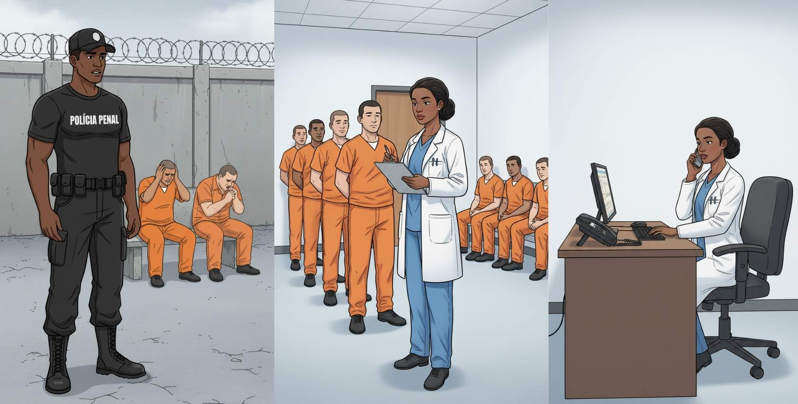
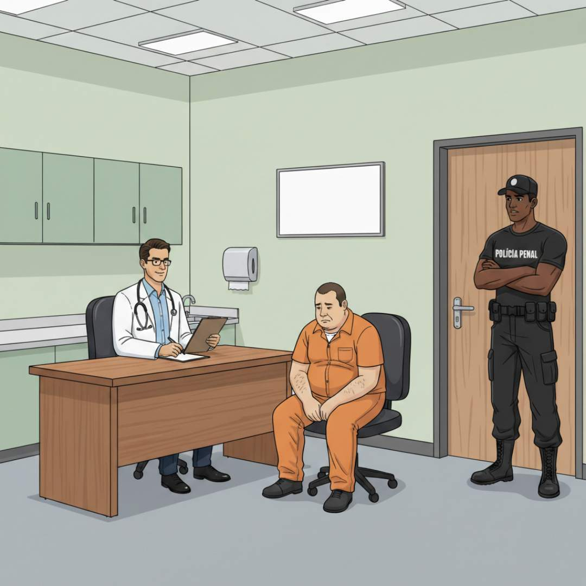
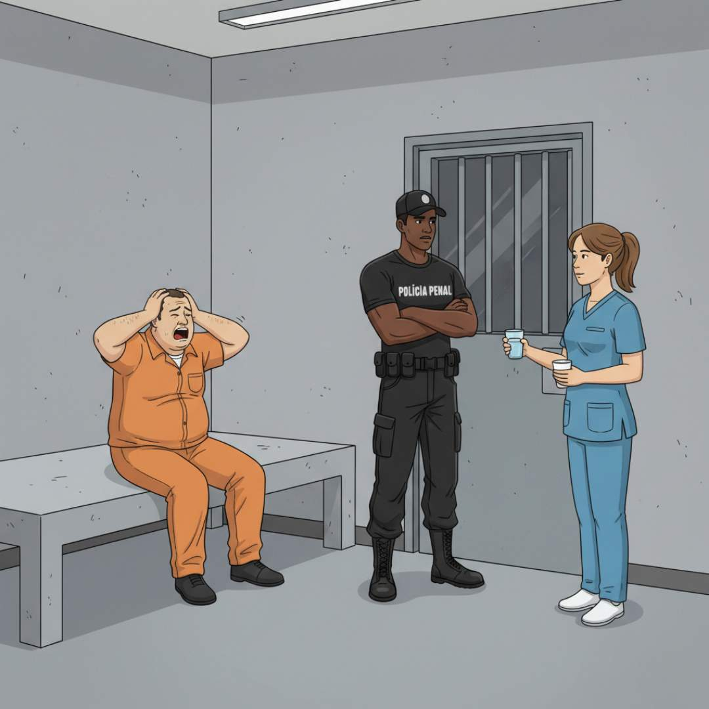
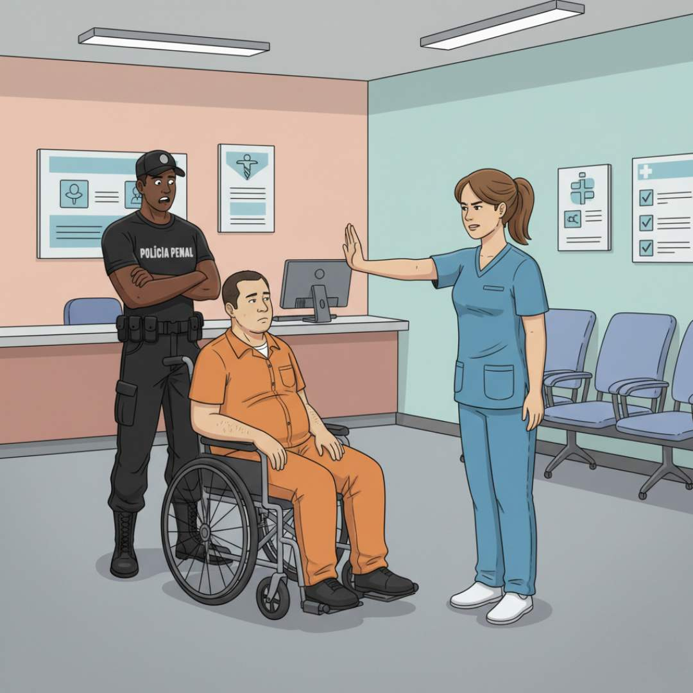
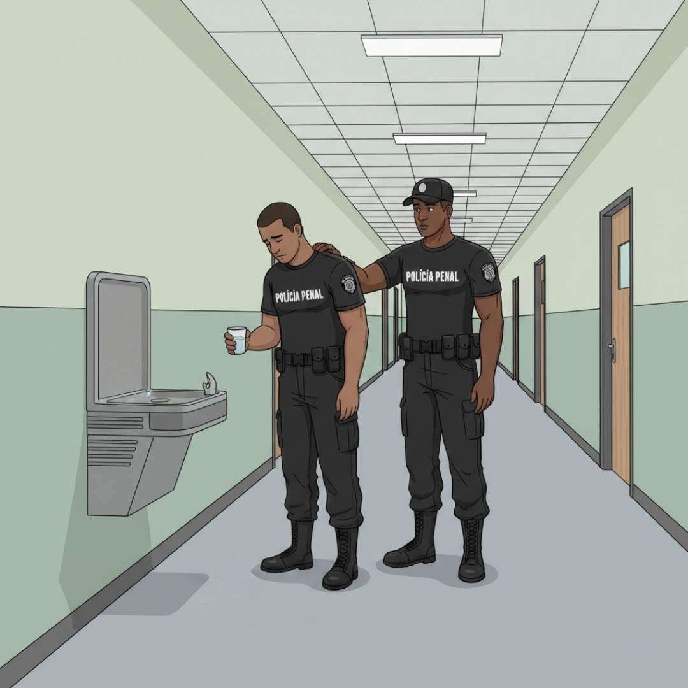

Apresentação da Unidade
Olá, estudante-trabalhador! Seja bem-vindo!
Nesta Unidade, discutiremos a atuação dos trabalhadores da segurança pública e da justiça no âmbito da Política Nacional de Atenção Integral à Saúde das Pessoas Privadas de Liberdade no Sistema Prisional (PNAISP). Vamos articular conhecimento teórico à prática do cuidado em saúde no sistema prisional. Serão objeto de estudo: a atuação intersetorial dos trabalhadores no cuidado em saúde como promotores da saúde; a segurança e os direitos, com destaque para o papel dos trabalhadores da segurança pública e da justiça na garantia do acesso à saúde; a gestão em saúde no sistema prisional; a atuação preventiva desses trabalhadores no controle tanto de doenças infecciosas e surtos no sistema prisional quanto de doenças crônicas, como tuberculose, HIV e hepatites, e de transtornos mentais. Encerraremos esta Unidade discutindo os desafios enfrentados pela saúde, segurança e justiça no ambiente prisional de forma intersetorial.
Objetivos de Aprendizagem da Unidade
Reconhecer a atuação dos trabalhadores da segurança pública e da justiça como promotores da saúde;
Reconhecer a importância do papel dos trabalhadores da segurança pública e da justiça na garantia do acesso à saúde e no controle de doenças infecciosas e não infecciosas no sistema prisional;
Identificar formas de interação entre a saúde, a segurança e a justiça no ambiente prisional.
Carga Horária de Estudo: 10 horas
1.1 A justiça, a segurança e a promoção da saúde: qual é o papel de cada uma?
Os trabalhadores da segurança pública e da justiça desempenham um papel fundamental no sistema prisional, especialmente na garantia do direito à saúde da população privada de liberdade. O Estado tem a responsabilidade de garantir que essa população receba cuidados médicos adequados, conforme estabelecido pela Constituição Federal de 1988 (Brasil, 1988) e pela Lei de Execução Penal (Lei nº 7.210/1984) (LEP) (Brasil, 1984). Ao atuar na segurança e na fiscalização (judiciário) das instituições penais, as equipes devem: criar condições para que os serviços de saúde sejam efetivamente acessíveis, promovendo não apenas a prevenção de doenças, mas também o tratamento adequado das enfermidades que surgem no ambiente prisional; e desenvolver ações de promoção da saúde, considerando as características específicas da realidade local. A falta de compreensão dos papéis e das atribuições de cada setor pode, em alguns contextos de trabalho, gerar embates entre as eAPP, a segurança e o judiciário.
Vamos iniciar nossa reflexão com o caso a seguir:
Reflexão
Diariamente novas pessoas privadas de liberdade (PPL) chegam à instituição penal. Conforme a legislação, o Estado deve garantir a saúde das PPL. Nesse sentido, a eAPP local elaborou um fluxo de avaliação em porta de entrada para identificar as necessidades de saúde dos ingressantes, assim como para realizar o acolhimento e a triagem para diagnóstico de doenças infecciosas, como tuberculose e sífilis. A equipe de segurança, no entanto, diz que tem baixo efetivo para apoiar a eAPP na movimentação das PPL e pressiona para que as novas PPL não passem pela triagem de porta de entrada. Pouco tempo depois, novos casos de doenças transmissíveis começam a ser detectados com maior frequência na instituição penal. Conflito: a eAPP diz que a equipe de segurança negligenciou a prevenção de surtos, enquanto a segurança argumenta que a triagem não era possível devido à insuficiência de policiais penais para garantir a segurança do estabelecimento penal.
- Qual é o papel dos trabalhadores da saúde, da segurança e da justiça no cuidado à saúde da população privada de liberdade?
- Como podemos pensar estratégias de prevenção a doenças e promoção da saúde integrando essas diferentes áreas de atuação no sistema prisional?
- Como resolver esses conflitos entre as equipes de trabalho?
A partir daqui, vamos apresentar alguns relatos fictícios de casos para que possamos discutir cada um desses pontos.
1.1.1 Trabalhadores da justiça como promotores de saúde: visão geral das responsabilidades
Os trabalhadores da justiça, no Brasil, desempenham funções essenciais para o funcionamento do sistema judiciário, garantindo a aplicação das leis e a manutenção da ordem jurídica. Juízes, promotores e defensores são atores fundamentais na garantia do direito à saúde das PPL (Quadro 1), garantindo o acesso a serviços de saúde adequados, conforme preconizado em normativas nacionais e internacionais.
Fonte: adaptado de Brasil (1984, 1988, 2023a) e United Nations (2015).
Caso 1: Urgência em Saúde Mental no Presídio Estadual de Vale Verde
O Presídio Estadual de Vale Verde (PEVV) está localizado no município de Vale Verde, que fica no interior do estado de Nova Esperança e tem cerca de 150 mil habitantes. A instituição penal tem capacidade para 800 PPL, mas está abrigando 1.250, enfrentando problemas de superlotação. João da Silva, privado de liberdade há cinco anos no PEVV, tem histórico de transtorno afetivo bipolar, diagnosticado antes de sua reclusão. Durante seu período na instituição, apresentou episódios de agitação, depressão grave e comportamento agressivo, colocando em risco sua segurança e a das demais PPL. Relatórios de agentes da Polícia Penal indicavam que João frequentemente se isolava, apresentava discursos desconexos e recusava-se a se alimentar por dias. Sua condição piorou nos últimos meses e houve tentativas de automutilação. No entanto, apesar das evidências, não recebeu cuidado adequado da eAPP, sendo tratado apenas com contenção física e disciplinar. Diante desse cenário, o juiz Pedro Albuquerque, responsável pela fiscalização das condições dos privados de liberdade e pela garantia dos direitos humanos, interveio para garantir que João recebesse tratamento psiquiátrico adequado.
Decisão Judicial para Cuidados com Saúde Mental:
O juiz determinou que o Estado garantisse os cuidados imediatos de João, com tratamento adequado da eAPP e encaminhamento para a Rede de Atenção Psicossocial (RAPS) do Sistema Único de Saúde (SUS), sob pena de responsabilização das autoridades competentes.
Fiscalização da Execução Penal:
O juiz realizou uma inspeção na instituição penal para avaliar as condições de saúde dos privados de liberdade e garantir que os direitos previstos na LEP fossem respeitados.
Encaminhamento para Tratamento Psiquiátrico:
Com a inclusão de João no fluxo de atenção à saúde mental proposto pela RAPS, nos termos da Resolução CNJ nº 487/2023, foi assegurado a ele o tratamento adequado da crise psiquiátrica aguda apresentada e a posterior reavaliação da estabilização do quadro. Considerando o direito à saúde e a diretriz de desinstitucionalização, o juiz determinou que a custódia fosse substituída por medida de cuidado em ambiente terapêutico, prioritariamente em serviço da RAPS, garantindo-se a articulação da rede para o manejo clínico apropriado.
Notificação para Secretaria Municipal de Saúde e para Administração Penitenciária:
O juiz notificou as gestões para implementarem fluxos de atendimento intersetorial, tanto da saúde como da segurança, articulando com pontos da RAPS.
Capacitação dos Policiais Penais:
O juiz solicitou que o Estado promovesse treinamentos à equipe da Polícia Penal para que os trabalhadores pudessem reconhecer sinais de adoecimento mental, intervir de maneira segura e humanizada e acionar a eAPP imediatamente tanto para a preservação da integridade física e psíquica dos privados de liberdade quanto para segurança dos próprios trabalhadores, efetivando o direito à saúde no ambiente prisional.
Esse caso demonstra como o juiz, no exercício de suas atribuições, pode ser um agente fundamental na defesa dos direitos das PPL, assegurando que políticas públicas de saúde sejam implementadas de forma eficaz no sistema prisional. Sua atuação está alinhada a diferentes esferas da promoção da saúde, conforme preconizado pela Política Nacional de Promoção da Saúde (Brasil, 2018).
Referente à saúde no sistema prisional, o Conselho Nacional de Justiça (CNJ) criou, em 2016, o Programa de Ações Intersetoriais de Assistência à Saúde e de Assistência Social para o Sistema Prisional (PAISA) (Conselho Nacional de Justiça, 2016), que previa um conjunto de ações e iniciativas que visavam reverter o quadro endêmico e adverso de violações existente no sistema prisional brasileiro. Até 2017, foi realizado em parceria entre o judiciário, o executivo e a sociedade civil para assegurar o acesso universal das PPL às ações de atenção básica à saúde e garantir a integralidade da atenção por meio da Rede de Atenção à Saúde (RAS) e da rede do Sistema Único da Assistência Social (SUAS), garantindo um padrão sanitário e de assistência mínimos.
Em 2019, o programa Fazendo Justiça foi criado para acelerar respostas estruturantes ao estado de coisas inconstitucional (ECI) nas instituições penais brasileiras, reconhecido pelo Supremo Tribunal Federal. Trata-se de um programa brasileiro fruto de uma parceria entre o Conselho Nacional de Justiça (CNJ) e o Programa das Nações Unidas para o Desenvolvimento (PNUD), com o apoio do Ministério da Justiça e Segurança Pública. Conta com o protagonismo do judiciário para a articulação de atores em rede com foco na qualificação de etapas do ciclo penal e do ciclo socioeducativo e aposta no diálogo interinstitucional em diferentes níveis federativos para fomentar ações customizadas a cada unidade da federação. Ações do programa são focadas em três eixos: (1) aperfeiçoar os procedimentos de porta de entrada; (2) garantir a regularidade no cumprimento da decisão judicial nas medidas penais e socioeducativas; (3) qualificar a inclusão social na porta de saída. Esse programa propõe a criação ou a melhoria de produtos, estruturas e serviços, promove eventos, formações e capacitações, gera produtos de conhecimento e apoia as produções normativas do CNJ (Conselho Nacional de Justiça, 2024).
1.1.2 Trabalhadores da segurança pública na garantia do acesso à saúde: visão geral das responsabilidades
Conforme descrito no Art. 144 da Constituição Federal de 1988 (Brasil, 1988), a segurança pública é dever do Estado e direito e responsabilidade de todos e deve ser exercida para a preservação da ordem pública e da integridade das pessoas e do patrimônio por meio dos seguintes órgãos: polícia federal; polícia rodoviária federal; polícia ferroviária federal; polícias civis; polícias militares e corpos de bombeiros militares; e polícias penais federal, estaduais e distrital. A Emenda Constitucional nº 104, de 4 de dezembro de 2019 (Brasil, 2019) altera o inciso XIV do caput do Art. 21, o § 4º do Art. 32 e o Art. 144 da Constituição Federal para criar as polícias penais federal, estaduais e distrital.
A Lei de Execução Penal, em seu Art. 11, define a prestação de assistências (material, à saúde, jurídica, educacional, social e religiosa) à PPL (Brasil, 1984). A polícia penal tem, entre outras, as atribuições de coordenar, planejar e executar as ações do tratamento penal, que envolvem a prestação das assistências. É fundamental reconhecer o policial penal como agente promotor da ressocialização, que vai além do exercício da fiscalização, da vigilância e da disciplina.
Agora que você já conhece as atribuições do policial penal na prestação de assistências às PPL, vamos voltar ao Presídio Estadual de Vale Verde.
Caso 2: Surto de gripe no Presídio Estadual de Vale Verde
O policial penal Carlos Castanha, responsável pela vigilância e disciplina no Bloco B do PEVV, percebeu que vários privados de liberdade estavam apresentando sintomas como febre, tosse e dor de cabeça. Nos últimos três dias, mais de 50 privados de liberdade relataram mal-estar e alguns estavam visivelmente debilitados. Castanha decidiu comunicar o setor de saúde da instituição para sugerir uma avaliação mais detalhada e contatou a enfermeira responsável, Adriana Souza, que imediatamente iniciou uma triagem. Após exames clínicos e observação dos casos, Adriana suspeitou que os sintomas eram compatíveis com os de gripe, o que poderia caracterizar um surto. Como a enfermaria da instituição tinha estrutura limitada, ela acionou a Secretaria Municipal de Saúde de Vale Verde solicitando apoio. Diversas medidas de controle foram implementadas na PEVV para controlar o surto:

Isolamento e monitoramento:
- Os casos mais graves foram transferidos para uma ala específica para evitar a disseminação da doença;
- PPL com sintomas leves foram orientadas a permanecer em suas celas;
- As visitas presenciais foram suspensas temporariamente para reduzir o risco de contágio.
Distribuição de Medicamentos e Cuidados Básicos:
- A Secretaria de Saúde enviou um lote emergencial de antitérmicos e analgésicos;
- Intensificou-se, pela eAPP, o monitoramento dos casos, incluindo aspectos da saúde mental.
Higienização e Prevenção:
- A limpeza dos espaços comuns foi reforçada;
- Agentes e PPL receberam máscaras descartáveis;
- O fornecimento de álcool em gel foi ampliado.
Vacinação e Acompanhamento:
- Como o surto ocorreu antes da campanha anual de vacinação, foi feita uma mobilização para vacinar as PPL e servidores da instituição o mais rápido possível.
- Médicos da rede municipal foram chamados para avaliar e atender os casos mais graves.
Conclusão:
O surto foi controlado em duas semanas. Apenas dois casos precisaram de internação hospitalar, mas não houve registro de óbito. A resposta rápida do policial penal Castanha e a articulação eficiente com a eAPP minimizaram as consequências que a gripe poderia ter causado na instituição penal.
O episódio reforçou a importância da vigilância em saúde nas instituições penais. A comunicação entre profissionais da segurança e da saúde resultou na criação de um protocolo para manejo de surtos futuros no PEVV. A ocorrência de um surto de gripe evidencia os desafios do sistema prisional e destaca a importância da implementação das diretrizes estabelecidas na Política Nacional de Promoção da Saúde (PNPS) e na PNAISP de forma intersetorial.
Percepção do policial Castanha sobre a atuação do profissional da segurança
Fonte: elaboração das autoras (2025).
Diante da reflexão do policial Castanha, você sabe como ocorre a formação dos servidores da Polícia Penal?
Existe uma Matriz Curricular para a formação dos servidores da Polícia Penal proposta pela Escola Nacional de Serviços Penais (ESPEN), que tem como objetivo a atuação no fomento e na execução da formação inicial e continuada dos policiais penais federais, além de ser referência para as escolas e centros de formações estaduais no que tange aos conhecimentos em políticas públicas voltadas ao sistema prisional, entre outras questões (Brasil, 2024). Nessa Matriz, estão organizados os eixos temáticos que precisam integrar o curso de formação inicial, mas também capacitações e atividades formativas que ocorram recorrentemente ao longo dos anos de trabalho dos servidores penais, garantindo a formação continuada e atualizada desses trabalhadores. A área de atenção à saúde da população privada de liberdade insere-se no Eixo 2, das Rotinas e Procedimentos no Sistema Prisional, ao lado de outras rotinas vinculadas à cidadania, direitos humanos, políticas públicas e participação social.
Reflexão
A saúde das PPL depende da capacidade de diálogo e cooperação entre áreas que, historicamente, se veem como opostas. Como podemos ser pontes nesse processo?
1.2 Gestão em saúde no sistema prisional: um desafio compartilhado
A gestão em saúde pressupõe arranjos de estrutura, articulação e mobilização de alianças e parcerias, além dos recursos políticos e estratégicos que propiciam condições para alcançar os objetivos das políticas, planos e programas.
A cooperação entre gestores de saúde e de segurança no sistema prisional é fundamental para otimizar recursos e a integração dos profissionais que atuam direta ou indiretamente na saúde no sistema prisional. As práticas rotineiras de atendimento à saúde nas instituições penais devem ser pensadas e articuladas em conjunto, de forma intersetorial, para que reflitam as necessidades das PPL. No Quadro 5, podemos observar alguns exemplos de ações estratégicas em saúde prisional e o papel dos gestores que podem ser replicadas em qualquer lugar do país.
Partindo do pressuposto de que os gestores são os responsáveis por operacionalizar e executar as ações estratégicas de saúde prisional, a comunicação efetiva entre as diferentes áreas é fator crucial para que a implementação da política de saúde possa avançar significativamente diante da não passividade e da criatividade que podem trazer inovações à gestão.
Papel dos gestores nas ações estratégicas de promoção da saúde no sistema prisional.
Ação Estratégica
Planejamento de programas de saúde: vacinação, testagem rápida e educação em saúde
Gestores das eAPP:
Coordenam a elaboração e execução de programas de saúde, garantindo insumos e protocolos
adequados.
Diretores de estabelecimento penal:
Apoiam a implementação dos programas no estabelecimento penal, garantindo a participação
dos privados de liberdade e
servidores.
Chefes de segurança:
Auxiliam na organização e segurança durante a realização das ações de saúde.
Ação Estratégica
Modelos de relatórios para notificar problemas à gestão ou eAPP
Gestores das eAPP:
Criam protocolos de registro e análise de dados de saúde da população privada de
liberdade.
Diretores de estabelecimento penal:
Garantem que os relatórios sejam preenchidos e enviados às instâncias superiores.
Chefes de segurança:
Relatam ocorrências de saúde no dia a dia e colaboram com a eAPP na identificação de
problemas.
Ação Estratégica
Reunião periódica de equipe
Gestores das eAPP:
Convocam e lideram reuniões para avaliar e melhorar as estratégias de promoção da saúde.
Diretores de estabelecimento penal:
Participam e garantem que as demandas do estabelecimento penal sejam levadas às eAPP.
Chefes de segurança:
Trazem informações da rotina operacional e colaboram na busca por soluções.
Ação Estratégica
Capacitar agentes de segurança para integrar a saúde às suas rotinas de segurança
Gestores das eAPP:
Desenvolvem materiais e treinamentos sobre promoção em saúde e prevenção de doenças.
Diretores de estabelecimento penal:
Garantem que os agentes sejam capacitados e apoiam a implementação das boas práticas.
Boas práticas: as boas práticas em saúde são procedimentos, padrões e diretrizes que
promovem uma assistência de
qualidade, segura e eficaz.
Chefes de segurança:
Aplicam os conhecimentos adquiridos e disseminam as orientações entre a equipe.
Ação Estratégica
Apoio logístico ao acesso a serviços de saúde (escoltas, triagens, consultas, entre outros)
Gestores das eAPP:
Definem protocolos para encaminhamento e priorização de casos de saúde.
Diretores de estabelecimento penal:
Organizam a logística para atendimentos externos e internos, incluindo autorização para
deslocamento.
Chefes de segurança:
Coordenam a escolta e garantem a segurança durante o acesso aos serviços de saúde.
Ação Estratégica
Procedimentos básicos de triagem na chegada de novas PPL
Gestores das eAPP:
Supervisionam a triagem inicial de saúde e identificam possíveis condições que exigem
atenção imediata.
Diretores de estabelecimento penal:
Garantem a aplicação dos protocolos de triagem ao receber novos privados de liberdade no
estabelecimento penal.
Chefes de segurança:
Auxiliam na triagem de segurança e encaminham os privados de liberdade para avaliação da
eAPP.
Ação Estratégica
Uso de equipamentos de proteção individual (EPIs) por servidores e PPL, quando necessário
Gestores das eAPP:
Definem diretrizes sobre o uso adequado de EPIs para diferentes situações no
estabelecimento penal.
Diretores de estabelecimento penal:
Garantem a disponibilidade de EPIs e fiscalizam o cumprimento das normas.
Chefes de segurança:
Orientam e fiscalizam o uso correto dos EPIs por agentes e privados de liberdade.
Ação Estratégica
Educação em saúde: orientações simples para PPL sobre prevenção de doenças
Gestores das eAPP:
Desenvolvem materiais educativos e realizam ações de conscientização sobre higiene,
doenças e cuidados básicos.
Diretores de estabelecimento penal:
Facilitam a realização de ações educativas no estabelecimento penal.
Chefes de segurança:
Reforçam as orientações de higiene e prevenção no dia a dia da segurança.
Ação Estratégica
Identificação de sinais de problemas comuns de saúde no sistema prisional
Gestores das eAPP:
Criam e utilizam protocolos para monitoramento e intervenção precoce em problemas de
saúde recorrentes.
Diretores de estabelecimento penal:
Garantem que os agentes e demais funcionários estejam atentos a sinais de alerta entre
privados de liberdade e
servidores.
Chefes de segurança:
Observam o comportamento dos privados de liberdade e informam possíveis sinais de agravo
à eAPP.
1.3 Atuação preventiva no controle de doenças e agravos no sistema prisional
A atuação preventiva no controle de doenças e agravos prevalentes no sistema prisional exige estratégias específicas devido às condições particulares desse ambiente. A superlotação, instalações inadequadas e o acesso limitado a serviços básicos criam um cenário propício para a disseminação de tuberculose, HIV/Aids, hepatites virais, sífilis, doenças dermatológicas, entre outras, e para o aumento da prevalência de doenças ou agravos não transmissíveis, como diabetes, hipertensão e de transtornos mentais.
Ações preventivas, como triagem na admissão (porta de entrada), vacinação, educação em saúde, distribuição de insumos de prevenção e realização de exames periódicos e de tratamentos intramuros, bem como a existência de fluxos bem determinados de informações de saúde nas transferências, são fundamentais não apenas para proteger as PPL, mas também para evitar que essas doenças se propaguem para a comunidade externa por meio de visitantes, funcionários e egressos do sistema prisional.
A efetividade dessas ações depende diretamente da capacidade de articulação entre os diferentes profissionais e serviços que compõem a rede intersetorial de atendimento, tanto dentro quanto fora do ambiente prisional. Essa rede envolve áreas como assistência social, educação, saúde, segurança e o sistema judiciário, e sua integração amplia o alcance das intervenções ao considerar os Determinantes Sociais da Saúde (DSS) que influenciam o processo saúde-doença. Com isso, torna-se possível garantir a continuidade do cuidado após a liberdade, reduzir as chances de reincidência criminal e assegurar à PPL o direito constitucional à saúde, fortalecendo sua reinserção social e promovendo maior segurança coletiva.
Como você pode perceber, o termo intersetorial encontra-se destacado em todas as vezes que aparece no texto. Isso é necessário para demonstrar a importância da intersetorialidade na promoção de ações coordenadas de saúde no sistema prisional. Existem diversas barreiras estruturais, políticas e institucionais a serem superadas para que a articulação intersetorial seja possível no sistema prisional.
Reflexão
Intersetorialidade no Sistema Prisional
A integração entre os setores da saúde, da segurança e da justiça é a única forma de garantir o direito à saúde no ambiente prisional, respeitando os princípios constitucionais da dignidade e da universalidade.
Atenção!
A ausência de protocolos claros entre segurança e saúde gera riscos reais à vida e violações de direitos. Prevenção é planejamento intersetorial.
Você já ouviu falar sobre o Grupo Condutor da PNAISP ? (Brasil, 2014)
O Grupo Condutor da PNAISP é uma instância colegiada prevista na própria política (Portaria Interministerial MS/MJ nº 1, de 2 de janeiro de 2014). Ele foi criado para articular, planejar, acompanhar e avaliar a implementação da PNAISP nos estados e municípios.
O Grupo Condutor é formado por representantes da gestão da saúde (secretarias estaduais e municipais de saúde), da gestão prisional (secretarias de administração penitenciária, justiça ou segurança pública) e de outros atores que podem ser convidados conforme necessidade (como conselhos de saúde, defensoria pública, entre outros).
Conheça as principais atribuições desse grupo:
- lanejamento intersetorial: garantir que saúde e sistema prisional atuem de forma integrada, com definição de responsabilidades.
- Implantação da PNAISP: acompanhar a organização das eAPP, a estruturação dos serviços e a inclusão da população privada de liberdade no SUS.
- Monitoramento e avaliação: observar indicadores de saúde, acesso ao cuidado, financiamento e condições de trabalho das eAPP.
- Articulação com a rede de atenção: assegurar a continuidade do cuidado dentro e fora das instituições penais, fortalecendo a RAPS e demais redes do SUS.
O Grupo Condutor é estratégico porque atua como elo entre saúde e justiça, buscando superar a fragmentação entre os sistemas. Ele possibilita que as PPL sejam reconhecidas como sujeitos de direito à saúde, de forma equânime e integral, o que favorece a prevenção de doenças, a redução de agravos e a promoção da saúde nesse contexto.
Abaixo você pode verificar algumas estratégias para implementação de um Grupo Condutor da PNAISP em seu município.
O quê?
Reunir pessoas de diversos setores para compor o Grupo Condutor da PNAISP com encontros periódicos.
Clique para interagir
O quê?
Institucionalizar reuniões mensais de planejamento e acompanhamento de ações e projetos entre saúde e segurança.
Clique para interagir
O quê?
Criar calendário com a previsão de ações de saúde com integração intersetorial.
Clique para interagir
O quê?
Desenvolver protocolos conjuntos para triagem, atendimento de urgências e emergências, dispensa de medicamentos, manejo de surtos e ações preventivas.
Clique para interagir
O quê?
Realizar oficinas de integração intersetorial.
Clique para interagir
O quê?
Compartilhar informações sobre os indicadores básicos de saúde prisional.
Clique para interagir
1.4 Estudos de caso sobre conflitos entre saúde e segurança no ambiente prisional
Para encerrar esta Unidade, vamos apresentar alguns estudos de caso que remetem aos conflitos mais frequentes que acontecem nas instituições penais entre saúde e segurança, bem como reflexões sobre como eles poderiam ser resolvidos. Aproveite a leitura!
Caso 1: Confidencialidade na Consulta Médica

Caso 2: Administração de Medicamentos Controlados

Caso 3: Transferências vs. Tratamentos clínicos
Caso 4: De quem é a responsabilidade pelo atendimento em saúde?

Caso 5: Até onde vai a força? Saúde mental e os limites do trabalho no sistema prisional

Encerramento da Unidade
Ao articular os conhecimentos da teoria às necessidades do dia a dia no sistema prisional, você estará pronto para oferecer cuidados mais eficientes e humanizados para a população privada de liberdade!
Aproveite o tempo para refletir:
Como posso, na minha prática, promover a integração entre saúde, segurança e justiça?
Referências importantes
ALLGAYER, M. F. et al. Conselhos da comunidade: controle social e interlocução para a saúde prisional. Revista Brasileira de Segurança Pública, v. 16, n. 2, p. 122-137, 2022. Disponível em: https://revista.forumseguranca.org.br/rbsp/article/view/1340 . Acesso em: 21 ago. 2025.
BRASIL. Conselho Nacional do Ministério Público. Política Nacional de Atenção Integral à Saúde das Pessoas Privadas de Liberdade: o papel do Ministério Público na implementação da PNAISP. Brasília: CNMP, 2023a. Disponível em: https://www.cnmp.mp.br/portal/images/Publicacoes/documentos/2023/pnaisp.pdf . Acesso em: 21 ago. 2025.
BRASIL. Ministério da Saúde. Ministério da Justiça e Segurança Pública. Portaria Interministerial nº 1, de 2 de janeiro de 2014. Institui a Política Nacional de Atenção Integral à Saúde das Pessoas Privadas de Liberdade no Sistema Prisional (PNAISP) no âmbito do Sistema Único de Saúde (SUS). Diário Oficial da União, Brasília, DF, 3 jan. 2014. Disponível em: https://bvsms.saude.gov.br/bvs/saudelegis/gm/2014/pri0001_02_01_2014.html . Acesso em: 21 ago. 2025.
UNITED NATIONS. United Nations Standard Minimum Rules for the Treatment of Prisoners (the Nelson Mandela Rules). 2015. Disponível em: https://docs.un.org/en/A/RES/70/175 . Acesso em: 21 ago. 2025.
Referências
ALLGAYER, M. F. et al. Conselhos da comunidade: controle social e interlocução para a saúde prisional. Revista Brasileira de Segurança Pública, v. 16, n. 2, p. 122-137, 2022. Disponível em: https://revista.forumseguranca.org.br/rbsp/article/view/1340 . Acesso em: 21 ago. 2025.
BESSIL, M. H. et al. Sociedade Civil e Sistema Prisional. In: FÉLIX, N. Q. et al. (org.). Saúde em perspectiva: desafios e reflexões multidisciplinares. Caxias do Sul: EDUCS, 2024. p. 199-204. Disponível em: https://www.unisc.br/images/cursos/stricto/ppgps/2024/Sade_em_perspectiva.pdf . Acesso em: 21 ago. 2025.
BRASIL. Secretaria Nacional de Políticas Penais. Diagnóstico das Escolas Estaduais de Serviços Penais. Brasília: SENAPPEN, 2024. Disponível em: https://www.gov.br/senappen/pt-br/assuntos/espen/rede-das-escolas-de-servicos-penais-respen/Diagnostico_das_Escolas_de_Servicos_Penais_2024.pdf . Acesso em: 21 ago. 2025.
BRASIL. Conselho Nacional do Ministério Público. Política Nacional de Atenção Integral à Saúde das Pessoas Privadas de Liberdade: o papel do Ministério Público na implementação da PNAISP. Brasília: CNMP, 2023a. Disponível em: https://www.cnmp.mp.br/portal/images/Publicacoes/documentos/2023/pnaisp.pdf . Acesso em: 21 ago. 2025.
BRASIL. Ministério da Saúde. Secretaria de Vigilância em Saúde e Ambiente. Departamento do Programa Nacional de Imunizações e Doenças Imunopreveníveis. Guia de Manejo e Tratamento de influenza 2023. Ministério da Saúde, 2023b. Disponível em: https://www.gov.br/saude/pt-br/centrais-de-conteudo/publicacoes/svsa/influenza/guia-de-manejo-e-tratamento-de-influenza-2023 . Acesso em: 21 ago. 2025.
BRASIL. Ministério da Justiça e Segurança Pública. Portaria nº 160, de 6 de dezembro de 2022. Institui a Política Nacional de Educação em Serviços Penais – PNESP. Boletim de Serviço, 6 dez. 2022. Disponível em: https://dspace.mj.gov.br/bitstream/1/8382/2/PRT_DEPEN_2022_160.html . Acesso em: 21 ago. 2025.
BRASIL. Emenda Constitucional nº 104, de 4 de dezembro de 2019. Altera o inciso XIV do caput do art. 21, o § 4º do art. 32 e o art. 144 da Constituição Federal, para criar as polícias penais federal, estaduais e distrital. Diário Oficial da União, Brasília, DF, 5 dez. 2019. Disponível em: http://www.planalto.gov.br/ccivil_03/constituicao/emendas/emc/emc104.htm . Acesso em: 21 ago. 2025.
BRASIL. Ministério da Saúde. Secretaria de Vigilância em Saúde. Secretaria de Atenção à Saúde. Política Nacional de Promoção da Saúde (PNPS): Anexo I da Portaria de Consolidação nº 2, de 28 de setembro de 2017. Brasília, 2018. Disponível em: https://bvsms.saude.gov.br/bvs/publicacoes/politica_nacional_promocao_saude.pdf . Acesso em: 21 ago. 2025.
BRASIL. Ministério da Saúde. Ministério da Justiça e Segurança Pública. Portaria Interministerial nº 1, de 2 de janeiro de 2014. Institui a Política Nacional de Atenção Integral à Saúde das Pessoas Privadas de Liberdade no Sistema Prisional (PNAISP) no âmbito do Sistema Único de Saúde (SUS). Diário Oficial da União, Brasília, DF, 3 jan. 2014. Disponível em: https://bvsms.saude.gov.br/bvs/saudelegis/gm/2014/pri0001_02_01_2014.html . Acesso em: 21 ago. 2025.
BRASIL. Constituição (1988). Constituição da República Federativa do Brasil de 1988. Diário Oficial da União, Brasília, DF, 5 out. 1988. Disponível em: http://www.planalto.gov.br/ccivil_03/constituicao/constituicao.htm . Acesso em: 21 ago. 2025.
BRASIL. Lei nº 7.210, de 11 de julho de 1984. Lei de Execução Penal. Diário Oficial da União, Brasília, DF, 13 jul. 1984. Disponível em: http://www.planalto.gov.br/ccivil_03/leis/l7210.htm . Acesso em: 21 ago. 2025.
CONSELHO NACIONAL DE JUSTIÇA. Fazendo Justiça. Brasília, 2024. Disponível em: https://www.cnj.jus.br/sistema-carcerario/fazendo-justica/ . Acesso em: 21 ago. 2025.
CONSELHO NACIONAL DE JUSTIÇA. Os Conselhos da Comunidade no Brasil. Brasília, 2021. (Série Fazendo Justiça. Coleção Política prisional). Disponível em: https://www.cnj.jus.br/wp-content/uploads/2022/03/relatorio-conselhos-comunidade.pdf . Acesso em: 21 ago. 2025.
CONSELHO NACIONAL DE JUSTIÇA. Saúde Prisional. Brasília, 2016. Disponível em: https://www.cnj.jus.br/sistema-carcerario/saude-prisional/ . Acesso em: 21 ago. 2025.
FREITAS, F. S. Revisão da Matriz Curricular da Escola Nacional de Serviços Penais. 2017. Disponível em: https://www.gov.br/senappen/pt-br/assuntos/espen/normativos/revisao-da-matriz-curricular-da-espen.pdf . Acesso em: 21 ago. 2025.
POSSUELO, L. G. et al. (org.). Quebrando barreiras: tuberculose e hepatite C no sistema prisional – contribuições e orientações à sociedade civil. Santa Cruz do Sul: Ed. dos Autores, 2024. Disponível em: http://repositorio.unisc.br:8080/jspui/handle/11624/3773 . Acesso em: 21 ago. 2024.
SCHWARZBOLD, P. A formação para o trabalho do servidor penitenciário do Rio Grande do Sul nas políticas públicas de educação e saúde voltadas à população privada de liberdade. 2024. Dissertação (Mestrado em Educação) – Universidade de Santa Cruz do Sul, Santa Cruz do Sul, 2024. Disponível em: https://repositorio.unisc.br/jspui/handle/11624/3803 . Acesso em: 21 ago. 2025.
UNITED NATIONS. United Nations Standard Minimum Rules for the Treatment of Prisoners (the Nelson Mandela Rules). 2015. Disponível em: https://docs.un.org/en/A/RES/70/175 . Acesso em: 21 ago. 2025.
Minicurrículo das Autoras
Bióloga. Doutora em Ciências Biológicas, professora titular da Universidade de Santa Cruz do
Sul, docente do corpo
permanente do Programa de Pós-Graduação em Promoção da Saúde da UNISC. Coordenadora do
Núcleo de pesquisa e extensão com
foco no Sistema Prisional (NUPESISP/UNISC) e da área de Tuberculose no Sistema Prisional da
Rede Brasileira de Pesquisa
em Tuberculose (REDE-TB), Membro do Comitê Estadual de Enfrentamento à Tuberculose /RS
(CEETB/RS), do Comitê Técnico de
Assessoramento da FAPERGS (2025-2027), do Conselho da Comunidade de Santa Cruz do Sul e do
Conselho Municipal de Saúde
de Santa Cruz do Sul.
Lattes: http://lattes.cnpq.br/9903194013924888
Enfermeira, Doutoranda do Programa de Pós Graduação em Promoção da Saúde da UNISC e
Professora da Enfermagem
CEPRU/UNISC. Mestre em Promoção da Saúde e Especialista em Enfermagem do Trabalho.
Integrante do Núcleo de Pesquisa e
Extensão com Foco no Sistema Prisional (NUPESISP/UNISC).
Lattes: http://lattes.cnpq.br/0088368055014006
Psicóloga, Pós-graduanda em Gestão do Sistema Prisional, Mestre em Promoção da Saúde
(UNISC). Especialista em Saúde da
Família pela Universidade de Brasília (UnB); Especialista em Atenção Básica pela Escola de
Saúde Pública do RS
(Residência Integrada em Saúde); Técnica Superior Penitenciária - Psicóloga na Polícia Penal
do Estado do Rio Grande do
Sul. Membro do Núcleo de Pesquisa e Extensão com Foco no Sistema Prisional (NUPESISP/UNISC).
Presidente do Conselho
Municipal de Saúde de Venâncio Aires/RS. Conselheira do Conselho Municipal dos Direitos das
Mulheres de Santa Cruz do
Sul/RS. Colaboradora do Conselho Regional de Psicologia (CRP/RS).
Lattes: http://lattes.cnpq.br/3293955646488738
Enfermeira, servidora pública na Secretaria Estadual de Saúde do Rio Grande do Sul, Doutora
em Promoção da Saúde,
pesquisadora do Núcleo de Pesquisa e Extensão com Foco no Sistema Prisional
(NUPESISP/UNISC).
Lattes: http://lattes.cnpq.br/9035441979308817
Biomédica pela Universidade Federal de Ciências da Saúde de Porto Alegre, especialista em
Saúde Coletiva pela
Universidade Federal do Rio Grande do Sul, atuou da Saúde Prisional da Secretaria Estadual
de Saúde do Rio Grande do Sul
enquanto residente e atua como pesquisadora extensionista na Universidade de Santa Cruz do
Sul (UNISC) em projetos de
educação em saúde e desenvolvimento de novas tecnologias para o sistema prisional; e, compõe
o Núcleo de Pesquisa e
Extensão com Foco no Sistema Prisional (NUPESISP/UNISC).
Lattes: http://lattes.cnpq.br/1096438834177966
Biomédica pela Universidade de Santa Cruz do Sul. Mestranda em Promoção da Saúde pelo
Programa de Pós-Graduação em
Promoção da Saúde da Universidade de Santa Cruz do Sul. Pós-graduada em "Saúde Pública" e
"Epidemiologia e Vigilância em
Saúde pela" pela Faculdade de Pós-Graduação Facuminas. Colaboradora no Núcleo de Pesquisa e
Extensão com Foco no Sistema
Prisional (NUPESISP/UNISC). Membro da Diretoria do Conselho da Comunidade no âmbito da
Execução Penal de Santa Cruz do
Sul. Colaboradora do Projeto Elas 360, voltado a mulheres privadas de liberdade.
Lattes: http://lattes.cnpq.br/4221329924609182
Advogada; Servidora pública do Sistema Prisional do Estado do Rio Grande do Sul; Mestranda
em Promoção da Saúde (UNISC);
Especialista em Segurança Pública e Gestão de Sistemas Prisionais; Membro do Núcleo de
pesquisa e extensão com foco no
Sistema Prisional (NUPESISP/UNISC). Membro do Comitê Interinstitucional de Políticas
Públicas para as Mulheres Privadas
de Liberdade e Egressas do Sistema Prisional; Membro da Comissão de Elaboração,
Monitoramento e Implementação da
Política Penal de Enfrentamento ao Racismo no Âmbito do Sistema Prisional do RS.
Lattes: http://lattes.cnpq.br/6824328126977377